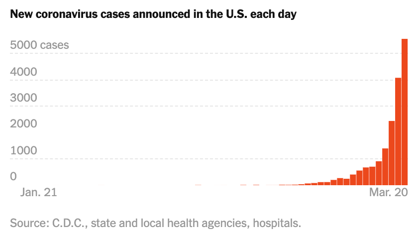

美欧加速撒钱抗疫
原文链接 备份链接 从股市的表现来看，市场更倾向于认同用短期的不便和经济痛苦来换取对病毒的控制 文 |《财经》特派记者 金焱 发自华盛顿 编辑 | 苏琦 新冠肺炎疫情持续肆虐，美国和欧洲为应对疫情影响经济，纷纷出台各种刺激救助政策，试图 …

单日新增确诊人数超过 5 千，累计确诊人数逼近 2 万，美国已经成为新冠肺炎疫情蔓延下的又一个巨大受害者。
中国、欧洲多国的经历已经表明，在疫情暴发、患者人数飞涨的情况下，几乎没有国家和地区能够躲过医疗资源紧缺的情况。如今，这一难题摆在了美国面前。

图 | 美国新增确诊激增（来源：纽约时报）
当地时间 3 月 19 日，美国纽约州州长安德鲁·库默 (Andrew Cuomo) 在记者会招待会上，表示目前纽约呼吸机极度短缺，纽约现有呼吸机仅 5000 至 6000 台，但总共需要 30000 台。
在电视新闻里，库默说，“我昨天与其他州的州长们通话，每一个州都在购买呼吸机……我们已经派人去呼吸机最大制造国中国购买。”
显然，面临呼吸机短缺的不只是纽约州，而是整个美国的问题。据报道，目前美国的医院内大约有 16 万台呼吸机，此外，美国还有 1.27 万台呼吸机在国家战略储备当中，这是美国联邦政府为应对国家紧急情况而保留的医疗用品。疫情持续加重，这个数量可能远远不够，出现短缺也几乎只是一个时间问题。
据独立非营利组织 ECRI 估计，美国目前正在使用的重症监护呼吸机中，大约一半是依赖进口的。美国国内只有不到 12 家公司生产呼吸机。
疫情持续发展，主要来自亚欧的多个国家早已扫光了全球呼吸机供应，现有的产能处于供不应求的状态，难以满足来自美国的新需求。
在新冠病毒患者治疗当中，呼吸机是一个至关重要甚至关乎生死的医疗设备，它可以确保患者在肺功能已经衰竭的情况下仍然可以继续呼吸。
因此短期内，呼吸机短缺可能成为美国应对疫情的一大困境，紧急提升呼吸机供应迫在眉睫；但长期来看，呼吸机在疫情结束后又将面临存量过剩的情况。
如何快速提升产量？铺设产线过程中谁能在短期内为高昂的费用买单？已经成为绕不过的难题。
呼吸机短缺困境

对于病情严重的患者来说，有没有呼吸机可能就是生与死的差别，但现在部分医院已经找不到任何地方可以买到这种“救命设备”。
众多来自和美国和欧洲的制造商表示，至少在短期内，他们无法加快生产速度，不断飙升的需求显然难以被满足。

图 | 美国患者分布（来源：纽约时报）
也正是因为这种物资短缺的情况几乎是全球性的，欧洲部分国家正在启用战时动员策略，以加快工厂生产呼吸机的速度，但在特殊时期里，这些设备多数都是用以满足当地的设备缺口，不被允许对外出口。
相比之下，美国在国家层面迟迟没给出相关措施，加速呼吸机的生产工作。此外，提升产能还是一个耗时数个月、花费数十亿美元的”大工程”。
根据纽约时报报道，医疗公司 Hamilton Medical 驻瑞士的首席执行 Andreas Wieland 表示，“现实情况是，设备是绝对不够的。”该公司也是全球最大的呼吸机生产商之一。
据介绍，Hamilton Medical 正在以最快速度加快产线的运转，其中的措施包括将办公室的员工调往工厂、临时雇佣更多员工等。但这也远未能解决短缺的现实问题。
“意大利想订购 4000 台，但没办法，”Andreas Wieland 表示，最后公司仅向意大利交付了 400 台，仅能满足十分之一的需求。

（来源：路透社）
呼吸机制造商在提高产量方面仍然面临着重大限制，呼吸机作为一个医疗器械非常复杂，其中涉及到的数百个小零件可能分别来自世界各地不同的公司，其中许多部件产自中国，复杂的工艺和供应链也进一步限制了产能提升。
位于美国圣路易斯的小型呼吸机制造商 Allied Healthcare Products 的首席执行官 Earl Refsland 表示的，目前公司每年大概生产 1000 台呼吸机，而扩大生产至少需要 8 个月。
而来自另一家小型呼吸机制造商 Ventec 的首席执行官向纽约时报表示，“我有百分之百的把握告诉你，现在每一家制造商都存在订单积压。”
还有一些正在进入呼吸机市场的制造商，进展速度也不乐观。10 年前，当 Matt Callaghan 还是美国斯坦福大学的博士后时，他设计了一款精简、低成本的呼吸机，医院可以把它储存起来，以应对“全球大流行”的可能性。
后来，他与人合作创办了一家名为 One Breath 的公司，旨在发展中国家生产更便宜的重症监护呼吸机。如今该公司筹集了数百万美元，在东南亚建立了制造工厂，并预计在未来 12 个月内产品下线。
随着新冠疫情的暴发，One Breath 正在探索它是否可以迅速重组，以满足新冠肺炎肆虐地区的迫切需求，这其中包括美国地区。但 Callaghan 告诉《麻省理工科技评论》，那些可以适应不断升级流行病的设备需要不同的标准、功能和电池，要保证可以正常生产，他们需要筹集更多资金，签订更多合同，并迅速获得美国食品药品监督管理局（FDA）和其他部门的批准。
即使得到这种支持，最好的情况是，从现在开始大约 11 个月后才能为美国医院生产。
医院已经难以等待还“远在天边”的呼吸机，约翰·霍普金斯大学危机应对办公室主任 Gabe Kelen 表示，我们正在考虑每一个可能的地方。
在这种情况下，医院系统也正在考虑是否能和约翰·霍普金斯大学工程系合作，制造自己的呼吸机。Kelen 也认为，这其实是一种极端的选择，且他们此前并没有制造如此精密机器的经验。
此外，医院还找来了伦理学专家，探讨了非常令人沮丧的问题：如果病人比呼吸机还多的时候，如何在使用呼吸机问题上进行选择？
汽车、飞机厂商能指望吗？
战争时期，飞机、汽车厂商常被调用以生产包括武器在内的军用设备。而在疫情期间，这些大型制造商所拥有的场地、制造设备和丰富的制造业经验成了值得依赖的一股势力。包括中国、欧洲都有大型车厂紧急改造产线，生产口罩、防护服以及呼吸机等医疗物资。如今包括通用、福特在内的美国车企巨头也有计划加入抗疫的阵线当中。
比如在德国，劳斯莱斯的一名发言人表示：“据我们所知，政府正在探索各种方式，帮助企业应对新冠疫情的暴发。在他们制定计划的过程中，我们希望在这个时候尽我们所能帮助政府和这个国家，并将寻求提供我们所能提供的任何实际帮助。”
美国车企巨头通用由于公司内出现确认病例，目前已经暂停北美地区汽车生产工作，目前已提出转产医疗设备的想法。通用发言人表示，国家处在艰难时期，“我们已经在研究是否可能支持呼吸机之类医疗设备生产”。
同日，福特公司也表示，愿意以“任何我们能够做到的方式帮助政府”，包括制造呼吸机等设备，已经在与政府初步讨论可行性。据 CNBC 报道，知情人士透露，通用汽车不会重新组装或更改用于生产汽车的设备，更可能是用一些工厂的额外空间来生产呼吸机。
此外，掌管特斯拉、SapceX 的马斯克也在推特上表示，转型生产呼吸机并不困难，“特斯拉生产的汽车拥有先进的暖通空调系统，SpaceX 生产的宇宙飞船拥有生命支持系统。”如果呼吸机出现短缺，他愿意制造。这引起了美国纽约市市长白思豪的注意，后者在推特上回应马斯克称，纽约市需要帮助，且已经联系马斯克。
而后马斯克对此进一步表示，特斯拉和 SpaceX 的员工正在研发呼吸机，尽管他认为这些产品可能派不上用场。
（来源：推特）
不过，获得车企响应还只是第一步，就算不考虑其中的资金投入和监管问题，从无到有地造出一台呼吸机也并不是一件容易的事情。
此前中国车企上汽通用五菱、比亚迪、广汽集团都迅速形成了口罩产能。但呼吸机毕竟不是口罩，车企说上就上。
像呼吸机这样的医疗设备，其生产受到监管部门的高度管制，依赖于专有的全球供应链，且需要大量的专业知识来提升和运行。这一切，都是为了保证呼吸机的安全运行。此前，英国的一些评论人士认为，英国汽车制造商或其它主要制造商可能会采取行动拯救世界的说法，显然过于乐观了。
也就是说，美国是否能指望汽车制造商来填补呼吸机的缺口，还是一个大大的问号。
政府力量很关键
要解决呼吸机紧缺问题，找到更多产能还只是第一步。在救治病人的迫切需求面前，制造业尽管有参与其中的意愿，也急需快速的监管批准和来自政府的合同。
由于疫情的未来发展情况难以预知，如今美国的患者人数还处在不断爬升的阶段，最终会出现多少病人？对应需要的病房、呼吸机等设施的数量是多少？谁都无法给出一个哪怕是模糊的答案。
而呼吸机本身造价不菲，要在短时间内迅速提升产量，产生的额外支出也难以忽视。
向美国医院系统投放 5 万台呼吸机需要多少钱？美国辛辛那提大学的呼吸治疗师兼名誉教授 Richard Branson 表示，普通医院级别的呼吸机可能需要 2.5 万美元，而一台具有所有最新功能的 ICU 呼吸机的价格可能是这个数字的两倍。
此外，每个零部件供应商都需要额外支付费用以加快交付速度，带来费用将会是几十亿美元。但在疫情得到控制后，可以预见的是这些设备将变得多余。
Kenneth Lutchen 是美国波士顿大学工程学院院长、生物医学工程教授，专注于研发更安全的机械呼吸机，他在一封电子邮件中告诉《麻省理工科技评论》，“即使公司可以提高呼吸机的产量，那谁会为所有额外的呼吸机买单？可能在某个时间节点，这场疫情会自行结束，直到下一次疫情暴发之前，放置在医院的呼吸机将远远超过他们所需要的数量。”
“需要有一个激励性的商业模式来促进企业生产，这其中需要政府正确参与进来。”Kenneth Lutchen 补充说。
业内人坚信，政府确实需要介入，为企业加速生产提供必要的确定性。
美国总统特朗普在当地时间 3 月 18 日的白宫新闻简报会上宣布，他将立即启动《国防生产法》，从而快速增加美国国内生产口罩和医疗防护用品的产量，对抗新冠肺炎疫情蔓延。他明确表示，启动该法案有明确的目标，“我们需要相关的零部件、口罩和呼吸机。”
《国防生产法》由美国国会在 1950 年通过，该法案赋予美国总统权力以国家安全和其他理由，扩大关键材料或产品的工业生产规模。
《国防生产法》项目的资金不仅可以用于相关政府订单的采购，还能够用于修建工业设施。比如，在当前，《国防生产法》项目的资金可以用于建设生产口罩和呼吸机的厂房设备和生产线，但是要动用这样的资金需要首先得到总统的亲自授权。
美国国防部前副助理部长 John McGinn 对媒体表示：“这项法案可以确保私营企业加快紧急医疗用品和设备的生产和分配，让政府在国家紧急状态时有广泛的权力，要求生产商增加应对产品的生产规模。”
理论上，有了这一法案，美国政府允许强制调动生产线生产关键供应品，其中就包括了呼吸机。
不过据纽约时报报道，到目前为止，联邦政府尚没有投资帮助制造商增加产能，只是勉强整理了联邦资源，以及有限地协调了呼吸机等器械的分配。各州只能各自为战，这也意味着，将由呼吸机的制造商们决定，哪些医院、哪些政府最需要这些机器——或者说，哪些人更愿意支付溢价。
除此之外，呼吸机不是一个即插即用的机器，它需要精准校准后才能给患者使用。如果校准做得不对，会对患者起到相反的效果。气胸、肺萎缩、被细菌感染的肺炎、肺氧中毒和吸入呕吐物等都是并发症之一。
在正常情况下，操作这些呼吸机的医护人员需要接受多年的培训，而在突如其来的疫情，带来的挑战不仅仅是呼吸机设备本身，是否能配备足够的医护人员，也是一个潜在的挑战。
-End-
参考：
https://www.nytimes.com/2020/03/20/world/coronavirus-news-usa-world.html
https://www.nytimes.com/2020/03/18/business/coronavirus-ventilator-shortage.html

原文链接 备份链接 从股市的表现来看，市场更倾向于认同用短期的不便和经济痛苦来换取对病毒的控制 文 |《财经》特派记者 金焱 发自华盛顿 编辑 | 苏琦 新冠肺炎疫情持续肆虐，美国和欧洲为应对疫情影响经济，纷纷出台各种刺激救助政策，试图 …
原文链接 备份链接 图片来源：视觉中国 记者：李亦萌 “ 截至目前，主流汽车制造商在欧洲的工厂关停率或接近半数。供应链所经受的考验令汽车制造商对全年收益的预期大幅降低，同时令当地投资者的信心被消磨。 ” 新冠肺炎疫情正在欧洲肆虐。世界卫生 …
原文链接 备份链接 这只不过说明不是美国人慌了，更多是疫情的散布和加剧切切实实就在身边。 文 | 马纶鹏 战疫下半场，各国出奇招。英国近似无情的冷静下的“全民免疫”，中东很多国家直接关闭国境，而美国人民的日常生活似乎并没有封城的恐惧，也 …
原文链接 备份链接 当人类生存的主题被病毒、大流行病裹挟时，在白宫坐镇的特朗普、民间看好的疾病专家安东尼·福西和美联储主席鲍威尔纷纷出招，是老旧的套路还是定海神针，还未可知 文 |《财经》特派记者 金焱 发自华盛顿 编辑 | 苏琦 3 …
原文链接 备份链接 编者按： 今天有两个新消息：好消息是，特朗普没感染，坏消息是，前一条消息并没有让美国人松一口气。相反，这两天美国的疫情紧张程度骤增，而这种紧张又通过各种社交媒体实时地传播到世界各地。 美国内部对于特朗普政府的疫情反应和 …